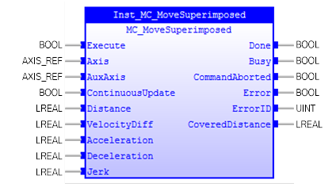
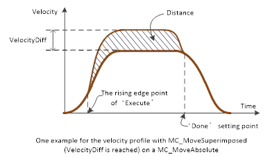
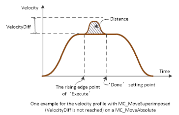
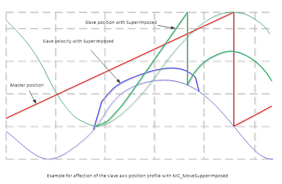
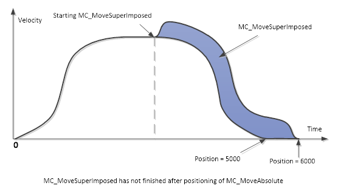
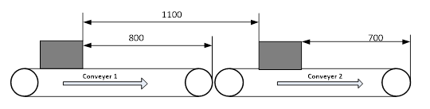
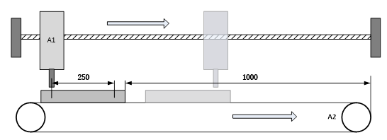

MC_MoveSuperimposed
Commands a controlled motion of a specified relative distance
additional to an existing motion.

Description:
MC_MoveSuperimposed Commands a controlled motion of a
specified relative distance additional to an existing motion. The existing
motion is not interrupted, but superimposed by the additional motion.
It is executed when ‘Execute’ changes to TRUE.
Any virtual axis can be AuxAxis. Each MC_MoveSuperimpose
should set different AuxAxis reference. Error will be triggered (‘Error’ =
TRUE) if the ‘AuxAxis’ has been running when ‘Execute’ changes to TRUE.
If ‘ContinuousUpdate’ is enabled, axis switching and invalid
inputs will stop the ongoing axis.
Any change of input variables will be ignored when ‘ContinuousUpdate’
is FALSE while ‘Execute’ changes to TRUE, or ‘ContinuousUpdate’ changes to
FALSE after ‘Execute’ changes to TRUE.
‘Distance’ can be a signed value. If the value is out of
range, ‘Error’ will be set. The new command position will be ‘Distance’
additional to the current set position when ‘Execute’ changes to TRUE.

‘Done’ is set when the command position achieves the
superimposed distance. It does not need to check position feedback.
‘VelocityDiff’ is an unsigned value. If the value is out of
range, ‘Error’ will be set. The new command ‘Velocity’ will be ‘VelocityDiff’
additional to the current set velocity when ‘Execute’ changes to TRUE.
The set velocity of axis does not necessarily reach the new
command velocity.

‘Acceleration’, ‘Deceleration ’and ‘Jerk’ are unsigned
values. If any values are out of range (negative, greater than maximum
acceleration / deceleration / jerk), ‘Error’ will be set. If any of these
values is set to 0, the maximum value will be used.
§
Effect of MC_MoveSuperimposed on a slave axis
Below is an example of MC_MoveSuperimposed while a slave
axis is camming with modulo axes. The master is moving in constant velocity and
running periodically. The slave axis follows the master axis with a sine cam
profile. Green lines show the slave position both with and without
MC_MoveSuperimposed.

Note: at slave velocity, the double
line shows the effect of MoveSuperimposed while in synchronized motion during camming.
The same is valid for the related slave position.
§
Effect of MC_MoveSuperimposed on MC_MoveAbsolute
Below is an example of MC_MoveSuperimposed working on
MC_MoveAbsolute (with target position of 5000). MC_MoveSuperimposed
(Superimposed distance = 1000) continues its movement even after the underlying
discrete motion is finished.

The ‘Done’ output will be set at position 5000, but the axis
is not stopped due to MC_MoveSuperimposed.
§
Distance correction for products on a conveyor belt
A conveyor belt consists of individual segments, each driven
by an axis. The conveyor belt is used for transporting packages, the spacing of
which is to be corrected. To this end a conveying segment must briefly run
faster or slower relative to a following segment.

The measured distance is 1100 mm and is to be reduced to 1000
mm. Conveyor belt 1 should be accelerated to reduce the distance. The
correction must be completed by the time the end of belt 1 is reached to
prevent the package being pushed onto the slower belt 2.
Since in this situation conveyer 1 must be accelerated, the
drive system requires a velocity reserve, assumed to be 500 mm/s in this case.
In practice this value can be determined from the difference between the
maximum conveyor speed and the current set velocity.
For parameterisation of function block MC_MoveSuperimposed, this
means:
Distance = 1100 mm - 1000 mm = 100
mm (distance correction)
VelocityDiff = 500 mm/s
The system uses the internally calculated velocity as degree
of freedom. VelocityDiff therefore is the upper limit for the velocity change
in this case. A suitable value for input parameters must be set to complete the
correction before the package will reach the belt 2.
Alternatively, the correction could be achieved by
decelerating belt 2. In this case Distance must be negative. The maximum
possible velocity change ‘VelocityDiff’ corresponds to the current set
velocity. Belt 2 could therefore be decelerated down to zero, if necessary.
§
Drilling unit
A drilling unit should drill two holes in a moving
workpiece. Synchronisation for the first hole is assumed to be achieved via the
flying saw (MC_GearInPos) and is not considered here. After the first operation
the device must be moved by certain distance relative to the moving workpiece.

The drilling unit is to be advanced by 250 mm relative to
the workpiece after the first hole has been drilled. From this position the
drilling unit is once again synchronous with the workpiece and the second hole
can be drilled.
Parameterisation of MC_MoveSuperimposed:
Distance = 250 mm
VelocityDiff = 500 mm/s (velocity
reserve of the drilling device)
The stated value for ‘VelocityDiff’ is an upper limit that
can be chosen freely (but not too small). Execute the FB (MC_MoveSuperimposed),
when ‘Done’ changes to TRUE, the drilling unit is once again synchronous with
the workpiece and the second hole can be drilled.
Make sure the input and output parameters are of data type
indicated in the table below.
Do not use the ‘AuxAxis’ for any other motion when it is used in
MC_MoveSuperimposed.
If MC_MoveSuperimposed is active, then any other command in
aborting mode except MC_MoveSuperimposed will abort both motion commands: both
the MC_MoveSuperimposed and the underlying motion command. In any other mode,
the underlying motion command is not aborted.
If MC_MoveSuperimposed is active and another MC_MoveSuperimposed
is commanded, only the ongoing MC_MoveSuperimposed command is aborted, and
replaced by the new MC_MoveSuperimposed, but not the underlying motion command.
MC_MoveSuperimposed causes a change of the velocity and, if
applicable, the commanded position of an ongoing motion in all relevant states.
In the state ‘Standstill’, MC_MoveSuperimposed acts like
MC_MoveRelative. When executed in state ‘Standstill’, MC_MoveSuperimposed
brings the axis to ‘DiscreteMotion’ state. When executed in any other state,
the axis’ state is not influenced.
The values of ‘Acceleration’, ‘Deceleration’, and ‘Jerk’ are
additional values to the ongoing motion, and not absolute ones. With this, the
underlying FB always finishes its job in the same period of time regardless of
whether the MC_MoveSuperimposed FB takes place concurrently.
The output ‘Active’ has a different behaviour as in buffered FBs.
Inputs/Outputs:
|
Name
|
Data Type
|
Description
|
|
INPUTS
|
|
Execute
|
BOOL
|
Start the motion at rising edge
|
|
Axis
|
AXIS_REF
|
Reference to the axis which will be
superimposed
|
|
AuxAxis
|
AXIS_REF
|
Reference to the AuxAxis, a virtual
axis.
|
|
ContinuousUpdate
|
BOOL
|
TRUE:
when the function block is triggered (rising ‘Execute’), it will - as long
as it stays TRUE – make the function block use the current values of the
input variables and apply it to the ongoing movement.
FALSE: with the rising edge of the
‘Execute’ input, a change in the input parameters is ignored during the whole
movement.
|
|
Distance
|
LREAL
|
Additional distance that is to be
superimposed
|
|
VelocityDiff
|
LREAL
|
Value of the velocity difference of
the additional motion (not necessarily reached). It is an unsigned value.
|
|
Acceleration
|
LREAL
|
Value of the acceleration
|
|
Deceleration
|
LREAL
|
Value of the deceleration
|
|
Jerk
|
LREAL
|
Value of the jerk
|
|
OUTPUTS
|
|
Done
|
BOOL
|
Commanded
position finally reached
|
|
Busy
|
BOOL
|
The
FB is not finished and new output values are to be expected
|
|
CommandAborted
|
BOOL
|
Command
is aborted by another command
|
|
Error
|
BOOL
|
Signals
that an error has occurred within the Function Block
|
|
ErrorID
|
UINT
|
Error
identification
|
|
CoveredDistance
|
LREAL
|
Displays
continuously the covered distance contributed by this FB since it was started
|
Examples:
Example 1:
|
 Example
Example
|
|
(* Example
for MC_MoveSuperimposed *)
inst_MoveSuperImposed ( Execute := bExecute,
Axis
:= Axis0Ref,
AuxAxis
:= Axis1Ref,
ContinuousUpdate:=
bContinuousUpdate,
Distance
:= lrSuperImposedDistance,
VelocityDiff
:= lrVeloDiff,
Acceleration
:= lrAccShift,
Deceleration
:= lrDecShift,
Jerk
:= lrJerkShift);
bDone := inst_MoveSuperImposed.Done;
bBusy := inst_MoveSuperImposed.Busy;
bCommAborted := inst_MoveSuperImposed.CommandAborted;
bError := inst_MoveSuperImposed.Error;
ErrorId := inst_MoveSuperImposed.ErrorID;
lrCoverDist := inst_MoveSuperImposed.CoveredDistance;
|
See also: